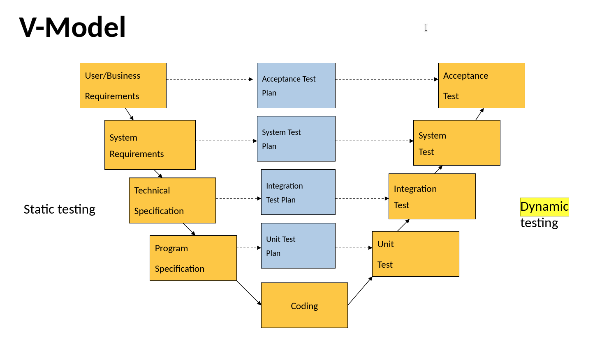
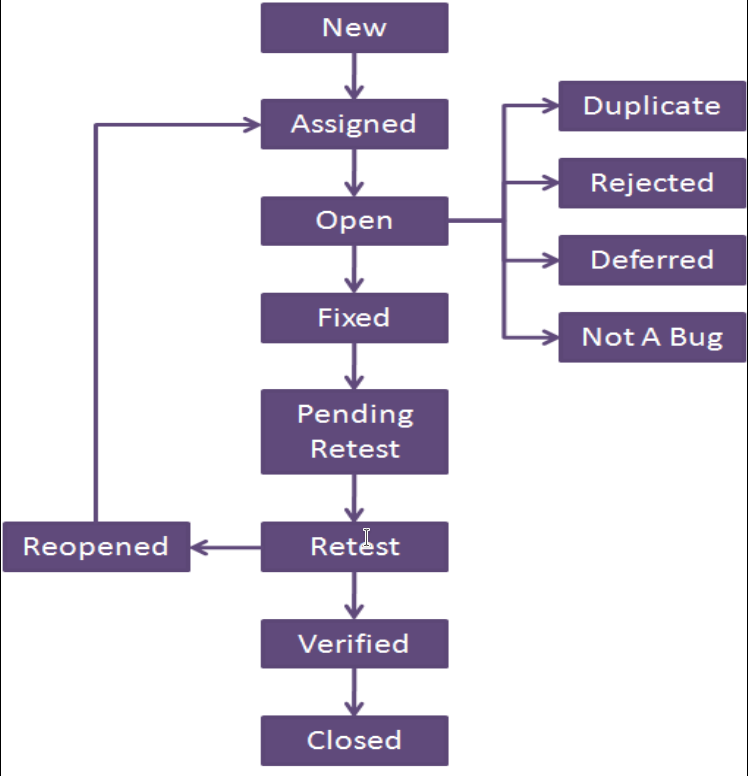
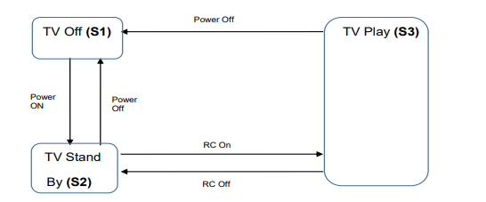
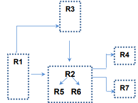
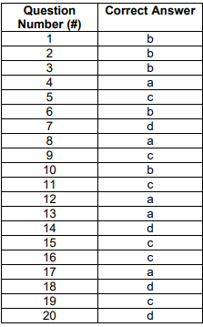
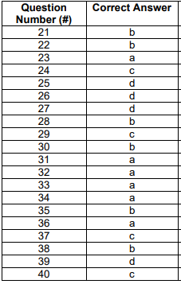

Exercise 1
1. Compare QA and QC in respect of focus and assessment measures/tools
| QC (repair defects) | QA (early detection) | |
|---|---|---|
| focus | product quality at a given moment | project process (process oriented) |
| character | reactive(detect issues) | preventive(block issues) |
| starting point | requirement gathering | project planning |
| tools and measures | testing, test metrics and reports | quality metrics, reviews and audits |
2. Objectivity in process quality assurance evaluations is critical to success of project. List four objective evaluation methods.
- independent QA organization
- independent reviewers
- standard criteria
- checklist
3. Mention four benefits of software quality assurance.
- sqa is a cost-effective investment
- increases customers trust
- improves the product's safety and reliability
- lower the expense of maintenance
- guards against system failure
4. Explain what is meant by PDCA/Deming cycle.
well defined cycle for quality assurance
5. An agile project using Scrum has many opportunities to objectively evaluate ceremonies and work products. Describe three opportunities.
- user stories are examined
- scrum master coaches the team
- feedbacks on what was built
- management or peers observe Scrum ceremonies
6. Process tailoring is a critical activity that allows controlled changes to the processes due to the specific needs of a project or a part of the organization. Mention three reasons for process tailoring.
- Accommodating the process to a new solution
- Adapting the process to a new work environment
- Modifying the process description, so that it can be used within a given project
- Adding more detail to the process to address a unique solution or constraint
- Modifying, replacing, or reordering process elements
7. List four examples of organizational process assets.
- templates
- plans
- best practices
- approved methods
- guidelines
8. Identify three similarities between QA and QC.
- both are critical components of its quality management strategy.
- improve a company’s product manufacturing process
- intend to cut expenses
9. Mention three quality assurance work products
- Criteria
- Checklists
- Evaluation reports
- Noncompliance reports
- Improvement proposals
10. replace with key term
- Problems identified when team members do not follow applicable standards, recorded processes, or procedures
- Quality assurance process to develop processes to reduce defects by avoiding or correcting
- Proven set of global best practices that drives business performance through benchmark key capabilities
- Ongoing process that ensures software product meets and complies with organization's established and standardized quality specifications
- Tangible resources used by an organization to guide the management of its projects and operations
- A process-level improvement training and appraisal program
- Proven set of global best practices that drives business performance through building and benchmarking key capabilities
- refers to how effectively a software product adheres to the core design specifications based on functional standards
- how effectively the project satisfies non-functional standards, including security, accessibility, scalability, and reliability, all of which contribute to the proper fulfillment of the predetermined requirements
- defines the structures necessary to contain the processes, process assets, and connections
- The physical structure or framework for organizing the content
- Reflects how the data is organized with in the structural architecture
- It is critical activity that allows controlled changes to the processes
- focuses on satisfaction of requirement
- ensures that the product works as intended in its target environment
noncompliance issuespoka-yokeThe Capability Maturity Model Integration (CMMI)Software quality assurance (SQA)Process AssetsThe Capability Maturity Model Integration (CMMI)The Capability Maturity Model Integration (CMMI)Software function qualitySoftware structural qualityProcess architectureStructure Process ArchitectureContent Process ArchitectureProcess adaption/tailoringVerificationValidation
11. Define three areas of interest of CMMI
- Product and service development (CMMI-DEV)
- Service establishment and management (CMMI-SVC)
- Product and service acquisition (CMMI-ACQ)
Exercise 2
1. The aim of 5 whys root cause analysis is to find the main technical causes behind the problem
- it aims to inspect a certain problem in depth until it shows you real cause
- often, issues that are considered a technical problem actually turn out to be human and process problems.
- avoid answers that are too simple / overlook important details.
- it is used for defects reported from a customer site
2. When to perform causal analysis? Which factors affect decision of effort and formality required?
when- during the task when problem or successes warrant [
تستدعي] a causal analysis - work product significantly deviates [
ينحرف] - more defects
- process performance exceeds expectations
- process does not meet its quality
- during the task when problem or successes warrant [
factors- stakeholders
- risks
- complexity
- frequency
- availability of data
3. Identify elements of process improvement proposal.
for changes proven to be effective
- areas that were analyzed including their context
- solution selection
- actions achieved
- results achieved
4. Discuss advantages of PCDA approach.
- stimulate continuous improvement
- test possible solutions
- prevent from recurring mistakes
5. Defining the problem is an important step in root cause analysis. Explain the rule that should be followed in defining the problem.
- define the problem
- collect data
- identify possible causal factors
- identify the root cause
- recommend and implement solutions
Defining the problem
SMART Rules
S -> SpecificM -> MeasurableA -> AttainableR -> RelevantT -> Time bound
6. Describe four types of costs of quality.
cost of good quality- prevention cost
prevent poor quality in products
- appraisal cost
measure, inspect, evaluate products to assure conformance to quality requirements
- prevention cost
cost of poor quality- internal failure cost
when a product fails to conform to quality specification before shipment to customer
- external failure cost
when a product fails to conform to quality specification after shipment to customer
- internal failure cost
7. Identify steps of internal audit process.
- planning the audit scheduling
- planning the process audit
- conducting the audit
- reporting the audit
- follow up on issue or implements found
8. Explain roles in RACI model.
- responsible
-
ensure right things happen in the right time
-
- accountable
-
ensure that something gets done correctly
-
- consult
-
people who need to be consulted
-
- inform
-
need to be kept informed
-
9. List three benefits and limitations of cost of quality system.
benefits- higher profitability
- more consistent products
- greater customer satisfaction
- lower costs
- meeting industry standard
- increase staff motivation
- reducing waste
limitations- measuring quality costs does not solve quality problems
- CoQ is merely a scoreboard for current performance
- inability to quantify the hidden quality costs (hidden factory)
10. MCQ
- The outputs of the management reviews shall include decisions and actions related to all following, except:
a. opportunities for improvement
b. need for changes to quality management system
c. audit results
d. resource needs
- Which of the following is not included in action plan?
a. affected stakeholders
c. expected cost
b. schedule
d. results achieved
c. audit resultsd. results achieved
11. Replace with Key Term(s)
- Cost incurred when a product fails to conform to quality specification before shipment to a customer.
- Principle that states that 80% of effects come from 20% of causes.
- Management meeting at planned intervals to ensure the company quality management system’s continuous suitability, adequacy and alignment with the strategic direction of the organization.
- Method for calculating the costs companies incur ensuring that products meet quality standards, as well as the costs of producing goods that fail to meet quality standards.
- Organization conduct examination at planned intervals to check if quality management system conforms to requirements of International Standard and effectively implemented & maintained.
- Percentage of an organizations total capacity or effort that is being used to overcome the cost of poor quality.
- Matrix that shows how each person contributes to a project.
- A mechanism of analyzing the defects to identify their sources.
- A cycle that is useful tool can help your team solve problems such more efficiency
- it is the cost that are generated as a result of producing defective material
internal failure costPareto Principlemanagement reviewscost of quality (COQ)hidden factoryRACI Model/MatrixRACI Model/Matrixroot cause analysis (RCA)PDCAthe cost of poor quality (COPQ)
12. A company’s website redesign would require design and development teams to work on tasks concurrently. Each task would affect work in sales, marketing, finance and business development. Structural changes, timelines and major costs would require input and approval from senior management.Needs can be easily overlooked and requirements dropped in such complex projects.What should the project manager create to avoid missing important details and ensure clear communication throughout the project?
RACI Matrix
13. Identify root cause analysis tool
- Visual representations of a relationship between two sets of data to test correlation between variables.
- Includes a severity occurrence and detection rating to calculate risk and determine the next steps
- Looking at any problem and drilling down by asking questions and avoid answers that are too simple or overlook important details.
- Every contributing cause and its potential effects can be shown under categories and sub-categories.
- Bar graph that groups the frequency distribution to show the relative significance of causes of failure.
- Group activity to collect different viewpoints encouraging a deeper level of critical thinking.
- Scatter plots.
- FMEA.
- 5 whys.
- Fish bone diagram.
- Pareto graph.
- Brainstorming.
14. Identify type of root cause
- Picking the wrong person for a task.
- The server is not booting up.
- Instructions not accurately followed.
- Organizational.
- Physical.
- Human.
15. Identify PDCA Phase
- Incorporate your plan on a small scale .
- Identify resource needs.
- PDCA model becomes the new standard baseline.
- Audit your plan’s execution.
- Do.
- Plan.
- Act.
- Check.
16. Mention management review inputs
- status of action from previous reviews
- changes in external and internal issues
- information on the performance
- the adequacy of resources
- the effectiveness of actions
17. Mention management review outputs
- opportunities for improvement
- any need for changes
- resource needs
18. Action plan
- People responsible for implementation
- Detailed description of the action
- Description of necessary tasks
- Description of the affected areas
- Affected stakeholders
- Schedule
- Cost expected
- Estimated cost of not addressing the issue
- Description of implementation actions
- Expected impact
- Identified needed pilots
Exercise 3
1. complete
- Static review objectives include
......,....., and...... - It is very useful that test basis has measurable coverage criteria to be used as
...... - An element of human psychology called
......makes it difficult to accept information that disagrees with currently held beliefs. - Static testing types include
......,......,......, and....... - Acceptance testing of system by administration staff is usually performed in a
...... - Finding defects is not the main focus of
......testing, its goal is to build confidence in the software. - Maintenance testing involve planned releases and unplanned releases called
....... - Triggers for software maintenance include
......,......and....... ......testing is used by developers of commercial off-the-shelf (COTS) software who want to get feedback from potential/existing users, customers before the software product is put on the market.
finding defects - gaining understanding - educating participantskey performance indicator (KPI)confirmation biaspeer revuew - walkthrough - technical review - inspection(simulated) production environmentuser acceptancehot fixesmodification - migration - retirementbeta and alpha
2. Explain the testing principles in details.
- testing shows the presence of defects
testing shows that defects are present but cannot prove that there are no defects
- exaustive testing is impossible
testing everything is impossible
- defect clustering
smaller number of modules usually is responsible for most of the perational failures
- early testing
to find defects early start testing as early as possible in SDLC
- pesticide paradox
repeated tests will no longer find more defects
- testing is context dependent
done differently in different contexts (safty-critical vs e-commerce system)
- abasence of error fallacy
fixing defects does not help if the system built is unusable
3. Identify three guidelines to successful conduct of review process.
- clear predefined objectives and measurable exit criteria
- the right people are involved
- testers a valued reviewers
- any checklists are up to date
- management supports a good review process
4. Clarify the tester role during each of SDLC phases. (not answered)
5. What should a tester do in case a component is not finished and he needs to conduct component integration testing?
Use driver
6. Compare between regression and confirmation testing types.
- confirmation testing
part as defect fix verification
- after the defect is detected and fixed, the software should be re-tested
- regression testing
testing the system to check that changes have not broken previously working code
- re-run every time a change is made
- some fixes may preduced unintended side-effects that are called regressions
7. Illustrate steps of dynamic testing using a diagram.

8. Specify Formal Review/Inspection Activity
- Evaluating the review findings against the exit criteria to make a review decision
- Explaining the scope, objectives, process, roles, and work products to the participants
- Noting potential defects, recommendations, and questions
- Defining the entry and exit criteria
- Review meeting/issue communication and analysis
- Initiate review
- Individual preparation
- Planning
9. Whose Responsibility in Review?
- Document all the issues, problems, and open points that were identified during the meeting. With the advent of tools to support the review process, especially logging of defects/open points/decisions, there is often no need for a scribe
- Decide on the execution of reviews, allocates time in project schedules and determines if the review objectives have been met
- Lead, plan and run the review. May mediate between the various points of view and is often the person upon whom the success of the review rests
- scribe
- manager
- moderator/facilitator
10. Specify Review Technique
- Reviewers are provided with structured guidelines on how to read through the work product based on its expected usage.
- Reviewers detect issues based on set of questions based on potential defects, which may be derived from experience.
- Reviewers are provided with little or no guidance on how this task should be performed. It needs little preparation and is highly dependent on reviewer skills.
- Reviewers take on different stakeholder viewpoints in individual reviewing.
- Scenario-based/dry run.
- Checklist-based.
- Ad hoc.
- Perspective-based reading.
11. In Which Testing Level Can Defect be Found?
- Incorrect sequencing or timing of interface calls
- Incorrect in code logic
- Failure of the system to work properly in the production environment(s)
- Integration testing
- Component testing
- System testing
12. Replace with Key Term(s)
- Most formal review type, Led by the trained moderator, involves peers to examine the product, The defects found are documented in a logging list or issue log.
- Testing without having any knowledge of the interior workings of the application.
- is the detailed investigation of internal logic and structure of the code, also called: glass testing or open-box testing.
- Tests that evaluate functions that the system should perform.
- is the process of testing individual components in isolation.
- focuses on interactions and interfaces between integrated components. It is generally automated. It is often the responsibility of developers.
- focuses on interactions and interfaces between systems and packages. It is the responsibility of testers.
- a level of testing that validates the complete and fully integrated software product.
- is a stage in the testing process in which users provide input and advice on system testing.
- Users of the software test the software in a lab environment at the developer’s site.
- made available to users to allow them to experiment and to raise problems that they discover in their own environment.
- is performed against a contract’s acceptance criteria for producing custom-developed software. Acceptance criteria should be defined when the parties agree to the contract.
- is performed against any regulations that must be adhered to, such as government, legal, or safety regulations.
- is the testing of “how well” the system behaves, It involves testing a software for the requirements which are non-functional in nature but important such as performance, security, scalability, etc.
- It is a type of retesting that is carried out by software testers as a part of defect fix verification.
- It is possible that a change made in one part of the code may accidentally affect the behaviour of other parts of the code, whether within the same component, in other components.
Inspectionblack-box testingWhite-box testingfunctional testingComponent testingComponent integration TestingSystem integration testingsystem testinguser acceptance testing (UAT)Alpha testingBeta testingContractual acceptance testingRegulatory acceptance testingNon-functional testingConfirmation testingRegression testing
Exercise 4
1. Identify testing estimation technique
- Breaking down the test project into modules; sub-modules; functionalities; tasks and estimate effort/duration for each task.
- Assumes that you already tested similar applications in previous projects and collected metrics from those projects.
- Three types of estimations most likely/optimistic/pessimistic are calculated for each activity.
- Work breakdown structure is distributed to a team comprising of 3-7 members for re-estimating the tasks and final estimate is the result of the summarized estimates based on the team agreement.
work breakdown structure WBSexperience based testingPERT estimation techniquewideband delphi technique
2. Identify Test Strategy Type
- Tests rely on making systematic use of predefined set of tests/test conditions, such as taxonomy of common types of failures, list of important quality characteristics, or company-wide look-and-feel standards.
- Tests are designed and implemented, and may immediately be executed in response to knowledge gained from prior test results rather than being pre-planned.
- Tests are designed based on some required aspect of the product, such as function, business process, internal structure, non-functional characteristic.
- Tests include reuse of existing test ware (especially test cases and test data) and test suites.
- Tests driven primarily by the advice, guidance, or instructions of stakeholders, business domain experts, or technology experts, who may be outside the test team or outside the organization itself.
methodicalreactivemodel-basedregressive-aversedirected
3. Identify testing life cycle phases and deliverable from each phase.
3.1 requirement analysis
- activities
- analyzing the (SRC)
- prepare (RTM)
- prioritizing the features
- analyzing the automation feasibility
- deliverables
- RTM
- automation feasibility report
3.2 test planning
answers the question
what to test?
- activities
- prepare test plan/strategy document
- test tool selection
- test effort estimation
- determine roles and responsibilities
- deliverables
- test plan/strategy document
- effort estimation
3.3 test case development
> creation and verification of test cases
- activities
- create test cases
- review the baseline testcases
- create test data
- deliverables
- test cases
- test data
3.4 environment setup
- activities
- prepare hardware and software
- setup environment
- perform smoke test
- deliverables
- environment ready
- smoke test result
3.5 test execution
- activities
- execute test cases
- document the test results
- map defects to test cases in RTM
- track defects to closure
- deliverables
- completed RTM
- testcases updated with results
- defect report
3.6 test cycle closure
testing team meat, discuss and analyze the artifacts
- activities
- evaluate cycle completion criteria based on time, test coverage, cost, ...
- prepare test metrics
- prepare test closure
- find the defect distribution by type and severity
- deliverables
- test closure report
- test metrics
4. Mention three entry and three exit criteria.
entry criteria
- testing environment is available
- testable code is ready
- test data is ready
exit criteria
- test planned have been met
- not high severity defects
- high risk area are completely tested
5. Give an example on a test work product for each of the following test activities: test planning, monitoring, analysis, design, implementation, execution and completion.
slides 30
6. Explain three differences between test strategy and test plan.
- test strategy
a high level document that capture the approach on how we go about testing and achieve the goal
components- scope
- overview
- test approach
- testing tools
- standards
- by project manager
- from business requirement specification (BRS)
- static document
- at organization level
- test plan
a document that contains the plan for all testing activities
components- test plan identifier
- features to be tested
- features not to be tested
- pass/fail criteria
- responsibilities
- staffing and training needs
- by test lead or test manager
- from the oriduct description (SRS), use case documents
- dynamic document
- at project level
7. What is meant by test procedure?
the sequence of action for a test
8. Exercise: Specify scenario severity and priority (High Priority & High Severity , Low Priority & High Severity , High Priority & Low Severity , Low Priority & Low Severity)
- Submit button is not working on a login page and customers are unable to login to the application.
- Crash in some functionality which is going to deliver after couple of releases.
- Spelling mistake of a company name on homepage.
- FAQ page takes a long time to load.
- Company logo or tagline issues.
- On a bank website, an error message pops up when a customer clicks on transfer money button.
- Font family or font size or color or spelling issue in the application or reports.
- High Priority & High Severity
- Low Priority & High Severity
- High Priority & Low Severity
- Low Priority & Low Severity
- High Priority & Low Severity
- High Priority & High Severity
- Low Priority & Low Severity
9. replace with key term
- it is a management activity which approximates how long a task would take to complete.
- estimating the test effort based on metrics of former similar projects or based on typical values.
- estimating the test effort based on the experience of the owners of the testing tasks or by experts.
- it is a quantitative measure of the degree to which a system, system component, or process possesses a given attribute.
- minimum set of conditions that should be met (prerequisite items) before starting the software testing, used to determine when a given test activity should start.
- it is concerned with summarizing information about testing effort, during and at the end of test activity/level.
- they are the set of positive and negative executable steps of a test scenario which has a set of pre-conditions, test data, expected result, post-conditions and actual results.
- ensure that users can perform appropriate actions when using valid data.
- they are performed to try to “break” the software by performing invalid (or unacceptable) actions, or by using invalid data.
- state the problem as clearly as possible so that developers can replicate the defect easily and fix it.
- it can be defined as the impact/effect of the bug on the application. It can be Showstopper/Critical/High/Medium /Low.
- it can be defined as an impact of the bug on the customers business. Main focus on how soon/urgent the defect should be fixed.
- specifies the sequence of actions for a test, i.e. one or more Test Cases, list any initial preconditions and any activities following execution.
- connects requirements to test cases throughout the validation process.
-
- It is a report that is created once the testing phase is successfully completed by meeting exit criteria defined for the project.
- document that gives a summary of all the tests conducted.
- gives a detailed analysis of the bugs removed and errors found.
- presents the list of known issues.
Test EstimationMetrics based techniqueExpert based techniqueMetricEntry criteriaTest reportingTest casesPositive test casesNegative test casesdefect reportDefect severityDefect prioritytest procedureRequirements Traceability Matrix (RTM)Test Closure Report
10. Mention testing estimation techniques
- PERT.
- WBS (work breakdown structure).
- wideband Delphi technique.
- percentage distribution.
- Expert-based technique.
- metrics-based technique.
11. Mention Test strategy types
- Analytical strategy.
- Reactive strategy.
- methodical strategy.
- model-based strategy.
- consultative strategy.
- Regression averse strategy.
- Process compliant strategy.
12. Mention the content of test procedure
- Identifier.
- Purpose.
- Special requirements.
- Procedure steps.
Exercise 5
1. replace with key terms
- Black-box testing technique used very useful for designing acceptance tests with customer/user participation.
- The time gap between date of detection & date of closure
- Black-box testing technique useful for testing the implementation of system requirements that specify how different combinations of conditions result in different outcomes
- Testing technique where informal (not pre-defined) tests are designed, executed, logged, and evaluated dynamically during test execution. The test results are used to create tests for the areas that may need more testing
- Type of testing is used to focus effort required during testing. It is used to decide where/when to start testing and identify areas that need more attention
- Tool used to establish and maintain integrity of work products (components, data and documentation) of the system through the whole life cycle
- Black-box testing technique used only when data is numeric or sequential
- divides data into partitions in such a way that all the members of a given partition are expected to be processed in the same way.
- is an extension of (EP) equivalence partitioning that can ONLY be used when:
- the partition is ordered.
- consisting of numeric or sequential data.
- allows the tester to view the software in terms of its states, transitions between states, the inputs or events that trigger state changes (transitions) and the resulting actions.
- exercises the executable statements in the code.
-
- is measured as the number of executable statements executed by the tests divided by the total number of executable statements in the test object, normally expressed as a percentage.
- is measured as the number of decision outcomes executed by the tests divided by the total number of decision outcomes in the test object, normally expressed as a percentage.
- exercises the decisions in the code and tests the code that is executed based on all decision outcomes.
- find out the minimum number of paths which will ensure covering of all the edges.
- is where tests are derived from the tester’s skill and insight and their experience with similar applications and technologies.
- enumerate a list of possible defects and to design tests that attack these defects.
- is sometimes conducted using session-based testing to structure the activity within a defined time-box, based on a test charter containing test objectives.
- involves situations that, should they occur, may have a negative effect on a project's ability to achieve its objectives.
- involves the possibility that a work product may fail to satisfy the legitimate needs of its users/stakeholders.
- The time gap between date of detection & date of closure.
- Life cycle which a bug goes through during its lifetime, from its discovery to fixation.
- find out the shortest number of paths following which all the nodes will be covered.
usecase testingdefect agedecision table testingexploratory testingrisk based testingconfiguration managementboundary value analysisEquivalence partitioningBoundary value analysis (BVA)State transition testingStatement testingCoverageDecision testingBranch CoverageExperience based testingerror guessing techniqueExploratory testingProject riskProduct riskDefect AgeBug life cycleStatement Coverage
2. Identify Type of Project Risk
- Test environment not ready on time
- Skill, training and staff shortages
- contractual issues
- Improper attitude such as not appreciating the value of finding defects during testing
- Low quality of the design, code, or configuration data
technical issuesorganizational factorssupplier issuesorganizational factorstechnical issues
3. identify Approach used in Testing Tool
- Generic script processes action words describing the actions to be taken, which then calls scripts to process the associated test data
- Separate out the test inputs and expected results, usually into a spreadsheet, and uses a more generic test script that can read the input data and execute the same test script with different data.
- Enable a functional specification to be captured in the form of a model, such as an activity diagram. This task is generally performed by a system designer.
keyword-driven testing approachdata-driven testing approachmodel-based testing
4. How to measure the decision testing coverage?
Coverageis measured as the number of decision outcomes executed by the tests divided by the total number of decision outcomes in the test object
5. When exploratory testing is most appropriate?
Most useful where:
- there are few or inadequate specifications
- severe time pressure
6. What is the common minimum coverage standard for decision table testing?
to have at least one test case per decision rule in the table.
7. To achieve 100% coverage in equivalence partitioning, test cases must cover all identified partitions by using (one value) . Complete.
8. Statement and decision testing are most commonly used at the (component) test level. Complete.
9. Risk level of an event can be determined based on ( Likelihood/probability of an event happening) and (Impact/harm resulting from event) . Complete.
10. Who is responsible for testing in following test levels: operation acceptance/ unit/ system testing.
| level | responsibility (done by) |
|---|---|
| component integration | developer |
| system integration | independent test team |
| operational acceptance | operations/systems administration staff |
| user acceptance | business analyst , subject matter experts and users |
11. Contrast benefits and drawbacks of hiring independent testers.
- benefits
- testers are unbiased and see other and different defects
- testers can verify assumptions made by people during specification and implementation of the system
- drawbacks
- isolation from development team
- developers may lose sense of responsibility for quality
- testers may be seen as bottleneck for release
12. Resulting product risk information is used to guide test activities. Elaborate.
- determine the test techniques to be employed.
- determine the extent of testing to be carried out.
- prioritize testing to find the critical defects as early as possible.
- determine whether any non-testing activities could be employed to reduce risk (e.g., providing training to inexperienced designers).
13. Illustrate the bug life cycle using a diagram.

14. Identify three potential risks of using tools to support testing.
- time and cost for the initial introduction of the tool
- vendor may provide a poor response for support, defect fixes, and upgrades
- may be relied on too much
- new technology may not be support by the tool
- Expectations of the tool may be unrealistic
- Version control of test assets may be neglected
15. After completing the tool selection and a successful proof-of-concept evaluation, introducing selected tool into an organization generally starts with pilot project. Why?
- gain knowledge about the tool
- evaluate how the tool fits
- decide ways of using
- Understand the metrics that you wish the tool to collect and report
16. Factors of choosing test technique
- type of system.
- type of risk.
- Level of risk.
- Customer or contractual requirements.
- test objective.
- Time and budget.
- knowledge of testers.
17. Identify testing role
- Component integration testing level
- System integration testing level
- operational acceptance test level
- user acceptance test level
- developers.
- independent test team.
- operations/systems administration staff.
- business analysts, subject matter experts, and users.
18. Potential benefits of using tools to support testing
- Reduction in repetitive Manuel work.
- Greater consistency and repeatability.
- More objective assessment.
- Easier access to information about testing.
19. Tool support for specialized testing
- Usability testing.
- Security testing.
- Accessibility testing.
- Localization testing.
- portability testing.
20. Test execution tools Approaches
- Data-driven testing approach.
- Keyword-driven testing approach.
- Model-based testing tools (MBT).
21. Mention Black-box Test case design techniques
- Equivalence Partitioning (EP)
- Boundary Value Analysis (BVA)
- Decision Tables
- State Transition Testing
- Usecase Testing
22. Mention White-box (Structure based) test case design techniques
- Statement testing
- Decision testing
23. Mention Experience based test case design techniques
- Error guessing
- Exploratory testing
24. Mention Tester role
- prepare test data
- review test plan
- design test cases
- evaluate non functional characteristics
- design test environment
- execute tests
25. Success factor for tools
- introducing the tool incrementally to the organization
- adaption with the use of the tool
- provide training for the tool users
- Monitoring tool use
- provide support to the users
Exercise 6
1. complete
- The (
.....) is responsible for quality in Agile projects. - XP teams use (
.....) time to pay down (.....) by refactoring code or do research. - A cross-functional team in XP releases (
.....) frequently. - Agile projects have short iterations; thus, project team receives (
.....) and (.....) feedback on product quality throughout SDLC. - The general objective of (
.....) is to visualize and optimize the flow of work within a value- added chain. - One programmer plays (
.....) role and focuses on clean code, and compiles and runs. Second one plays role of (.....) and focuses on the big picture and reviews code for improvement or refactoring. - There are 2 levels of plans in XP: (
.....) and (.....) In both levels, there are 3 steps: (.....) - User stories must address (
.....) and (.....) characteristics. Each story includes (.....) for these characteristics used to decide when a task is (.....) - All team members, testers and non-testers, can (
.....) on both testing and non-testing activities.
- (
whole team)- (
slack time - technical debats)- (
Minimum Viable Product (MVP))- (
early - continuous)- (
kanban)- (
pilot - navigator)- (
release planning - iteration planning - exploration, commitment, and steering)- (
functional - non-functional - acceptance criteria - finished)- (
provide input)
2. replace with key terms
- the team and stakeholders collaboratively decide what are the requirements and features that can be delivered into production and when.
- the team will pick up the most valuable items from the list and break them down into tasks then estimates and a commitment to delivering at the end of the iteration.
- a naming conversion practice used in design and code to have a shared understanding between teams.
- management approach used in situations where work arrives in an unpredictable fashion.
- The value chain to be managed is visualized by a Kanban board. Each column shows a station. The items to be produced or tasks to be processed are symbolized by tickets.
- The amount of parallel active tasks is strictly limited. This is controlled by the maximum number of tickets allowed for a station and/or globally for the board.
- is the time between a request being made and a task being released.
- is calculating the actual work-in-progress time.
- is the agile form of requirements specifications explain how the system should behave with respect to a single, coherent feature or function.
- Larger collections of related features, or a collection of sub-features that make up a single complex feature.
- Collaborative authorship of the user story can use techniques such as brainstorming and mind mapping.
- is a meeting held at the end of each iteration to discuss what was successful, what could be improved, and how to incorporate the improvements and retain the successes in future iterations.
- XP teams conduct a small test or proof of concept workout
release planningIteration planningSystem metaphorKanbanKanban BoardWork in Progress (WIP) LimitKanban lead timeKanban cycle timeUser storyEpicsINVEST techniqueRetrospectiveSpike
3. Mention Aspects of agile approaches
- Agile approaches.
- Collaborative user story creation.
- Retrospectives.
- Continues integration.
- Release and iteration planning.
4. Mention agile software development approaches
- Extreme programming (XP).
- Scrum.
- Kanban.
5. Mention XP Values
- Communication.
- feedback.
- Simplicity.
- Courage.
- respect.
6. Identify Main planning process in XP practices
- Have 2 levels:
- release planning.
- iteration planning.
- Each level have 3 steps:
- Exploration.
- commitment.
- steering.
7. Compare between Scrum and Kanban

8. Explain INVEST
- I -> Independent
- N -> Negotiation
- V -> Value
- E -> Estimable
- S -> Small
- T -> Testable
9. Explain 3cs concepts
- Card : the physical media describing a user story.
- Conversation : explains how the software will be used.
- Confirmation : The acceptance criteria.
10. Mention benefits of early and frequent feedback
- avoiding requirements misunderstandings
- clarifying customer feature requests
- discovering and resolving quality problems early
- providing information to agile team regrading its productivity
Exercise 7
1. complete
- When the regression testing is automated, the Agile testers are freed to concentrate their manual testing on (
.....) and (.....) testing of defect fixes. - In agile projects, no feature is considered done until it has been (
.....) and (.....) with the system. - (
.....) iterations occur periodically to resolve any remaining defects and other forms of (.....) - Because of the heavy use of test automation, a higher percentage of the manual testing on Agile projects tends to be done using (
.....) testing. - While developers will focus on creating unit tests, testers should focus on creating automated (
.....) and (.....) tests. - Changes to existing features have testing implications, especially (
.....) testing implications. - During an iteration, any given user story will typically progress sequentially through the following test activities: (
.....) and (.....) .
new feature implemented - confirmationintegrated - testedstabilization - technical debtexperienced based testingintegration, system - system integrationregressionunit testing - feature acceptance testing
2. replace with key terms
- occur periodically to resolve any remaining defects and other forms of technical debt.
- address defects remaining from the previous iteration at the beginning of the next iteration, as part of the backlog for that iteration.
- is functional/feature testing of expected behaviors of an application as a whole.
- involves cooperative stakeholders using plain language to write acceptance tests based on the shared understanding of user story requirements.
Stabilization iterationsfix bugs firstBehavior-driven development (BDD)Acceptance test-driven development (ATDD)
3. Automated activities of Continuous integration process
- Static code and analysis.
- Compile.
- Unit test.
- deploy.
- integration test.
- Report.
4. Continuous Integration Challenges
- CI tools have to be introduced and maintained.
- CI process must be defined and established.
- Test automation requires additional resources and can be complex to establish.
- Thorough test coverage is essential to achieve automated testing advantages.
- Teams sometimes over-rely on unit tests and perform too little systems and acceptance testing.
5. Test Activities During Iteration
- Unit testing.
- Feature acceptance testing:
- Feature verification testing.
- Feature validation testing.
- Regression testing (parallel through iteration).
- System test level.
6. Categories of “project work products” of interest to Agile testers
- Business-oriented work product.
- Development work product.
- Test work product.
7. Organizational Options for Independent Testing
- developers create many of the tests in the form of automated tests. One or more testers may be embedded within the team.
- retain fully independent separate test teams and assign testers on-demand during the final days of each sprint.
- have an independent, separate test team at the beginning of the project.
8. Agile Testing Techniques
- Test-driven development (TDD).
- Acceptance test-driven development (ATDD).
- Behavior-driven development (BDD).
9. TDD process
- Add test.
- watch test fail.
- write code.
- run test.
- refactor.
10. TDD benefits
- Code coverage.
- regression testing.
- simplifying debugging.
- system documentation.
11. BDD format
- Given (context)
- When (the action the user performs)
- Then (expected outcome)
12. Compare between TDD & BDD & ATDD

Exercise 8
1. complete
- In test pyramid, (
.....) and (.....) level tests are automated and created using (.....) tools. At (.....) and (.....) levels, automated tests are created using (.....) tools. - Testing quadrants apply to (
.....) testing only. - (
.....) strategies can be used by the testers in Agile teams to help determine the acceptable number of test cases to execute. - Iteration starts with iteration (
.....) which ends in tasks on a task board. These tasks can be (.....) in part based on level of (.....) associated with them. The aim is to know which tasks should start (.....) and involve more (.....) effort. - During iteration planning, team assesses each identified risk, which includes two activities: (
.....) and determining (.....) based on (.....) and (.....) - Information from the (
.....) is used during poker planning sessions to determine priorities of items to be completed in the (.....) - The main part of the lifecycle cost often comes from (
.....) .
- (
unit - integration - api based - system - system - gui-based)- (
dynamic)- (
Risk identification, analysis, and risk mitigation)- (
planning - prioritized -quality risks - earlier - testing)- (
categorizing risks - its level of risk - impact - the likelihood of defects)- (
risk analysis - iteration)- (
maintenance after the product have been released)
2. replace with key terms
- is the first iteration of the project where many preparation activities take place.
- Each team member brings a different set of skills to the team. The team works together on test strategy, planning, specification, execution, evaluation, and results reporting.
- The team may consist only of developers, ideally there would be one or more testers.
- Testers sit together with the developers and the product owner.
- Testers collaborate with team members (stakeholders, product owner, Scrum Master).
- Technical decisions regarding design and testing are made by the team as a whole.
- The tester is committed to question and evaluate the product’s behaviour and characteristics with respect to the expectations and needs of the customers and users.
- Development and testing progress is visible on the Agile task board.
- The tester must ensure the credibility of the strategy for testing, its implementation, and execution, otherwise the stakeholders will not trust the test results.
- Retrospectives allow teams to learn from successes and from failures.
- Testing must be able to respond to change, like all other activities in Agile projects.
- Externally observable behaviour with user actions as input operating under certain configurations.
- How the system performs the specified behaviour. Referred to as quality attributes or non-functional requirements.
- A sequence of actions between an external actor (often a user) and the system, in order to accomplish a specific goal or business task.
- Activities that can only be performed in the system under certain conditions defined by outside procedures and constraints.
- Between system and outside world.
- Design and implementation constraint that will restrict the options for the developer such as embedded software respecting physical constraints such as size, weight.
- The customer may describe the format, data type, allowed values, and default values for a data item in the composition of a complex business data structure.
- communication tool allows teams to build and share an online knowledge base on tools and techniques for development and testing activities.
- are used to store source code and automated tests, manual tests and other test work products in same repository.
- Tools that generate data to populate an application’s database are very beneficial when a lot of data and combinations of data are necessary to test the application.
- Manual data entry is often time consuming and error prone, but data load tools are available to make the process reliable and efficient.
- Specific tools are available to support test-first approaches, such as BDD, TDD, ATDD.
- Tools capture and log activities performed on an application during an exploratory test session
Sprint zeroCross functionalSelf organizingCo locatedCollaborativeEmpoweredCommittedTransparentCredibleOpen to feedbackResilientFunctional behaviorQuality characteristicsScenarios (use cases)Business rulesExternal interfacesConstraintsConstraintsWikisconfiguration management toolsTest data preparation and generation toolsTest data load toolsAutomated test execution toolsExploratory test tools
3. Mention Test Quadrants
- Q1 -> Unit & component tests.
- Q2 -> Solution & system acceptance tests.
- Q3 -> Functional acceptance tests.
- Q4 -> System qualities tests.
4. Agile Tester Skills
- Competent in test automation, TDD, BDD, ATDD, white-box, black-box, experience testing.
- positive and solution-oriented with team members.
- Accurately evaluate and report test results.
- Plan and organize their own work.
- Respond to change quickly.
5. Agile Tester Role
- Understanding, implementing, and updating test strategy.
- Measuring and reporting test coverage.
- Ensuring proper use of testing tools.
- Configuring, using, and managing test environments and test data.
- Reporting defects and working with the team to resolve them.
6. Mention Common estimation techniques used in Agile projects
- planning poker.
- T-shirt sizing.
7. Test sessions include
- Survey session.
- Analysis session.
- Deep coverage.
8. Mention tools to support communication and information sharing
- wikis.
- instant messaging.
- desktop sharing.
Test Bank on lectures 3,4,5
1. Which one of the following answers describes a test condition?
- a) A distinguishing characteristic of a component or system
- b) A testable aspect of a component or system identified as a basis for testing
- c) The degree to which a software product provides functions which meet stated and implied needs when the software is used under specified conditions
- d) Test cases designed to execute combinations of conditions and actions resulting from them
2. Which of the following statements is a valid objective for testing?
- a) The test should start as late as possible so that development had enough time to create a good product
- b) To validate whether the test object works as expected by the users and other stakeholders
- c) To prove that all possible defects are identified
- d) To prove that any remaining defects will not cause any failures
3. Which of the following statements correctly describes the difference between testing and debugging?
- a) Testing identifies the source of defects; debugging analyzes the defects and proposes prevention activities
- b) Dynamic testing shows failures caused by defects; debugging eliminates the defects, which
- are the source of failures
- c) Testing removes faults; but debugging removes defects that cause the faults
- d) Dynamic testing prevents the causes of failures; debugging removes the failures
4. Which one of the statements below describes the most common situation for a failure discovered during testing or in production?
- a) The product crashed when the user selected an option in a dialog box
- b) The wrong version of a compiled source code file was included in the build
- c) The computation algorithm used the wrong input variables
- d) The developer misinterpreted the requirement for the algorithm
5. Mr. Test has been testing software applications on mobile devices for a period of 5 years. He has a wealth of experience in testing mobile applications and achieves better results in a shorter time than others. Over several months, Mr. Test did not modify the existing automated test cases and did not create any new test cases. This leads to fewer and fewer defects being found by executing the tests. What principle of testing did Mr. Test not observe?
- a) Testing depends on the environment
- b) Exhaustive testing is not possible
- c) Repeating of same tests will not find new defects
- d) Defects cluster together
6. In what way can testing be part of Quality Assurance?
- a) It ensures that requirements are detailed enough
- b) Testing reduces the risk of poor software quality
- c) It ensures that standards in the organization are followed
- d) It measures the quality of software in terms of number of executed test cases
7. Which of the following activities is part of the main activity "test analysis" in the test process?
- a) Identifying any required infrastructure and tools
- b) Creating test suites from test scripts
- c) Analyzing lessons learned for process improvement
- d) Evaluating the test basis for testability
8. Match the following test work products (1-4) with the right description (A-D).
- Test suite
- Test case
- Test script
- Test charter
- A. A set of test scripts to be executed in a specific test run
- B. A set of instructions for the execution of a test
- C. Contains expected results
- D. Documentation of test activities in session-based exploratory testing
- a) 1A, 2C, 3B, 4D
- b) 1D, 2B, 3A, 4C
- c) 1A, 2C, 3D, 4B
- d) 1D, 2C, 3B, 4A
9. How can white-box testing be applied during user acceptance testing?
- a) To check if large volumes of data can be transferred between integrated systems
- b) To check if all code statements and code decision paths have been executed
- c) To check if all work process flows have been covered
- d) To cover all web page navigations
10. Which of the following statements comparing component testing and system testing is TRUE?
- a) Component testing verifies the functionality of software modules, program objects, and classes that are separately testable, whereas system testing verifies interfaces between components and interactions between different parts of the system
- b) Test cases for component testing are usually derived from component specifications, design specifications, or data models, whereas test cases for system testing are usually derived from requirement specifications or use cases
- c) Component testing only focuses on functional characteristics, whereas system testing focuses on functional and non-functional characteristics
- d) Component testing is the responsibility of the testers, whereas system testing typically is the responsibility of the users of the system
11. Which one of the following is TRUE?
- a) The purpose of regression testing is to check if the correction has been successfully implemented, while the purpose of confirmation testing is to confirm that the correction has no side effects
- b) The purpose of regression testing is to detect unintended side effects, while the purpose of confirmation testing is to check if the system is still working in a new environment
- c) The purpose of regression testing is to detect unintended side effects, while the purpose of confirmation testing is to check if the original defect has been fixed
- d) The purpose of regression testing is to check if the new functionality is working, while the purpose of confirmation testing is to check if the original defect has been fixed
12. Which one of the following is the BEST definition of an incremental development model?
- a) Defining requirements, designing software and testing are done in phases where in each phase a piece of the system is added
- b) A phase in the development process should begin when the previous phase is complete
- c) Testing is viewed as a separate phase which takes place after development has been completed
- d) Testing is added to development as an increment
13. Which of the following should NOT be a trigger for maintenance testing?
- a) Decision to test the maintainability of the software
- b) Decision to test the system after migration to a new operating platform
- c) Decision to test if archived data is possible to be retrieved
- d) Decision to test after “hot fixes”
14. Which of the following options are roles in a formal review?
- a) Developer, Moderator, Review leader, Reviewer, Tester
- b) Author, Moderator, Manager, Reviewer, Developer
- c) Author, Manager, Review leader, Reviewer, Designer
- d) Author, Moderator, Review leader, Reviewer, Scribe
15. Which activities are carried out within the planning of a formal review?
- a) Collection of metrics for the evaluation of the effectiveness of the review
- b) Answer any questions the participants may have
- c) Definition and Verification of fulfillment of entry criteria for the review
- d) Evaluation of the review findings against the exit criteria
16. Which of the review types below is the BEST option to choose when the review must follow a formal process based on rules and checklists?
- a) Informal Review
- b) Technical Review
- c) Inspection
- d) Walkthrough
17. Which of the following statements about static testing are MOST true?
- a) Static testing is a cheap way to detect and remove defects
- b) Static testing makes dynamic testing less challenging
- c) Static testing makes it possible to find run-time problems early in the lifecycle
- d) When testing safety-critical system, static testing has less value because dynamic testing finds the defects better
18. You will be invited to a review. The work product to be reviewed is a description of the in-house document creation process. The aim of the description is to present the work distribution between the different roles involved in the process in a way that can be clearly understood by everyone. You will be invited to a checklist-based review. The checklist will also be sent to you. It includes the following points:
- i. Is the person who performs the activity clearly identified for each activity?
- ii. Are the entry criteria clearly defined for each activity?
- iii. Are the exit criteria clearly defined for each activity?
- iv. Are the supporting roles and their scope of work clearly defined for each activity?
In the following we show an excerpt of the work result to be reviewed, for which you should use the checklist above:
"After checking the customer documentation for completeness and correctness, the software architect creates the system specification. Once the software architect has completed the system specification, he invites testers and verifiers to the review. A checklist describes the scope of the review. Each invited reviewer creates review comments - if necessary - and concludes the review with an official review done-comment."
Which of the following statements about your review is correct?
- a) Point ii) of the checklist has been violated because it is not clear which condition must be fulfilled to invite to the review
- b) You notice that in addition to the tester and the verifier, the validator must also be invited. Since this item is not part of your checklist, you do not create a corresponding comment
- c) Point iii) of the checklist has been violated as it is not clear what marks the review as completed
- d) Point i) of the checklist has been violated because it is not clear who is providing the checklist for the invitation to the review
19. What is checklist-based testing?
- a) A test technique in which tests are derived based on the tester's knowledge of past faults, or general knowledge of failures
- b) A test technique based on an analysis of the specification of a component or system
- c) An experience-based test technique whereby the experienced tester uses a list of items to be noted, checked, or remembered, or a set of rules or criteria against which a product must be verified
- d) An approach to testing where the testers dynamically design and execute tests based on their knowledge, exploration of the test item and the results of previous tests
20. Which one of the following options is categorized as a black-box test technique?
- a) A technique based on analysis of the architecture
- b) A technique checking that the test object is working according to the detailed design
- c) A technique based on the knowledge of past faults, or general knowledge of failures
- d) A technique based on formal requirements
21. The following statement refers to decision coverage:
“When the code contains only a single ‘if’ statement and no loops or CASE statements, and its execution is not nested within the test, any single test case we run will result in 50% decision coverage.”
Which of the following statement is correct?
- a) The statement is true. Any single test case provides 100% statement coverage and therefore 50% decision coverage
- b) The statement is true. Any single test case would cause the outcome of the “if” statement to be either true or false
- c) The statement is false. A single test case can only guarantee 25% decision coverage in this case
- d) The statement is false. The statement is too broad. It may be correct or not, depending on the tested software
22. Which one of the following is the description of statement coverage?
- a) It is a metric, which is the percentage of test cases that have been executed
- b) It is a metric, which is the percentage of statements in the source code that have been executed
- c) It is a metric, which is the number of statements in the source code that have been executed by test cases that are passed
- d) It is a metric, that gives a true/false confirmation if all statements are covered or not
23. Which statement about the relationship between statement coverage and decision coverage is true?
- a) 100% decision coverage also guarantees 100% statement coverage
- b) 100% statement coverage also guarantees 100% decision coverage
- c) 50% decision coverage also guarantees 50% statement coverage
- d) Decision coverage can never reach 100%
24. For which of the following situations is exploratory testing suitable?
- a) When time pressure requires speeding up the execution of tests already specified
- b) When the system is developed incrementally, and no test charter is available
- c) When testers are available who have enough knowledge of similar applications and technologies
- d) When an advanced knowledge of the system already exists, and evidence is to be if it should be tested intensively
25. An employee’s bonus is to be calculated. It cannot be negative, but it can be calculated down to zero. The bonus is based on the length of employment:
- Less than or equal to 2 years
- More than 2 years but less than 5 years
- 5 to 10 years inclusively
- Longer than 10 years
What is the minimum number of test cases required to cover all valid equivalence partitions for calculating the bonus?
- a) 3
- b) 5
- c) 2
- d) 4
26. A speed control and reporting system has the following characteristics:
- If you drive 50 km/h or less, nothing will happen.
- If you drive faster than 50 km/h, but no more than 55 km/h, you will be warned.
- If you drive faster than 55 km/h but not more than 60 km/h, you will be fined.
- If you drive faster than 60 km/h, your driving license will be suspended.
- The speed in km/h is available to the system as an integer value.
Which would be the most likely set of values (km/h) identified by applying the boundary value analysis, where only the values on the boundaries of the equivalence classes are selected?
- a) 0, 49, 50, 54, 59, 60
- b) 50, 55, 60
- c) 49, 50, 54, 55, 60, 62
- d) 50, 51, 55, 56, 60, 61
27. A company's employees are paid bonuses if they work more than a year in the company and achieve a target which is individually agreed before.
These facts can be shown in a decision table:
| Test-ID | T1 | T2 | T3 | T4 | |
|---|---|---|---|---|---|
| Condition1 | Employment for more than 1 year? | YES | NO | NO | YES |
| Condition2 | Agreed target? | NO | NO | YES | YES |
| Condition3 | Achieved target? | NO | NO | YES | YES |
| Action | Bonus payment | NO | NO | NO | YES |
Which of the following test cases represents a situation that can happen in real life, and is missing in the above decision table?
- a) Condition1 = YES, Condition2 = NO, Condition3 = YES, Action= NO
- b) Condition1 = YES, Condition2 = YES, Condition3 = NO, Action= YES
- c) Condition1 = NO, Condition2 = NO, Condition3 = YES, Action= NO
- d) Condition1 = NO, Condition2 = YES, Condition3 = NO, Action= NO
28. Which of the following statements about the given state transition diagram and table of test cases is TRUE?

| Test Case | 1 | 2 | 3 | 4 | 5 |
|---|---|---|---|---|---|
| Start State | S1 | S2 | S2 | S3 | S3 |
| Input | Power On | Power Off | RC On | RC Off | Power Off |
| Expected Final State | S2 | S1 | S3 | S2 | S1 |
- a) The given test cases cover both valid and invalid transitions in the state transition diagram
- b) The given test cases represent all possible valid transitions in the state transition diagram
- c) The given test cases represent some of the valid transitions in the state transition diagram
- d) The given test cases represent pairs of transitions in the state transition diagram
29. A video application has the following requirement: The application shall allow playing a video on the following display resolution:
- 640x480
- 1280x720
- 1600x1200
- 1920x1080
Which of the following list of test cases is a result of applying the equivalence partitioning test technique to test this requirement?
- a) Verify that the application can play a video on a display of size 1920x1080 (1 test case)
- b) Verify that the application can play a video on a display of size 640x480 and 1920x1080 (2 test cases)
- c) Verify that the application can play a video on each of the display sizes in the requirement (4 test cases)
- d) Verify that the application can play a video on any one of the display sizes in the requirement (1 test case)
30. Which of the following statements BEST describes how tasks are divided between the test manager and the tester?
- a) The test manager plans testing activities and chooses the standards to be followed, while the tester chooses the tools and set the tools usage guidelines
- b) The test manager plans, coordinates, and controls the testing activities, while the tester automates the tests
- c) The test manager plans, monitors, and controls the testing activities, while the tester designs tests and decides on the release of the test object
- d) The test manager plans and organizes the testing and specifies the test cases, while the tester executes the tests
31. Which of the following metrics would be MOST useful to monitor during test execution?
- a) Percentage of executed test cases
- b) Average number of testers involved in the test execution
- c) Coverage of requirements by source code
- d) Percentage of test cases already created and reviewed
32. Which of the following can affect and be part of the (initial) test planning?
- a) Budget limitations
- b) Test log
- c) Failure rate
- d) Use cases
33. Which of the following lists contains only typical exit criteria from testing?
- a) Reliability measures, test coverage, schedule and status about fixing defect and remaining risks
- b) Reliability measures, test coverage, degree of tester’s independence and product completeness
- c) Reliability measures, test coverage, test cost, availability of test environment, time to market and product completeness
- d) Time to market, remaining defects, tester qualification, availability of testable use cases, test coverage and test cost
34. Which one of the following is NOT included in a test summary report?
- a) Defining pass/fail criteria and objectives of testing
- b) Deviations from the test approach
- c) Measurements of actual progress against exit criteria
- d) Evaluation of the quality of the test object
35. The project develops a "smart" heating thermostat. The control algorithms of the thermostat were modeled as Matlab/Simulink models and run on the internet connected server. The thermostat uses the specifications of the server to trigger the heating valves.
The test manager has defined the following test strategy/approach in the test plan:
- The acceptance test for the whole system is executed as an experience-based test.
- The control algorithms on the server are checked against standard of the energy saving regulation.
- The functional test of the thermostat is performed as risk-based testing.
- The security tests of data / communication via the internet are executed together with external security experts.
What four common types of test strategies/approaches did the test manager implement in the test plan?
- a) Methodical, analytical, reactive, and regression-averse
- b) Analytical, standard-compliant, consultative, and reactive
- c) Model-based, methodical, analytical, and consultative
- d) Regression-averse, consultative, reactive, and methodical
36. Which one of the following is the characteristic of a metrics-based approach for test estimation?
- a) Budget which was used by a previous similar test project
- b) Overall experience collected in interviews with test managers
- c) Estimation of effort for test automation agreed in the test team
- d) Average of calculations collected from business experts
37. As a test manager you are responsible for testing the following parts of requirements:
- R1 - Process anomalies
- R2 - Synchronization
- R3 - Approval
- R4 - Problem solving
- R5 - Financial data
- R6 - Diagram data
- R7 - Changes to the user profile
Notation: Logical requirement dependencies (A -> B means, that B depends on A):

Which one of the following options structures the test execution schedule according to the requirement dependencies?
- a) R1 ; R3 ; R4 ; R7 ; R2 ; R5 ; R6
- b) R1 ; R3 ; R2 ; R4 ; R7 ; R5 ; R6
- c) R1 ; R3 ; R2 ; R5 ; R6 ; R4 ; R7
- d) R1 ; R2 ; R5 ; R6 ; R3 ; R4 ; R7
38. You are testing a new version of software for a coffee machine. The machine can prepare different types of coffee based on four categories. i.e., coffee size, sugar, milk, and syrup. The criteria are as follows:
- Coffee size (small, medium, large)
- Sugar (none, 1 unit, 2 units, 3 units, 4 units)
- Milk (yes or no)
- Coffee flavor syrup (no syrup, caramel, hazelnut, vanilla)
Now you are writing a defect report with the following information:
- Title: Low coffee temperature.
- Short summary: When you select coffee with milk, the time for preparing coffee is too long and the temperature of the beverage is too low (less than 40 °C).
- Expected result: The temperature of coffee should be standard (about 75 °C).
- Degree of risk: Medium
- Priority: Normal
What valuable information was omitted in the above defect report?
- a) The actual test results
- b) Identification of the tested software version
- c) Status of the defect
- d) Ideas for improving the test case
39. Which one of the following is MOST likely to be a benefit of test execution tools?
- a) It is easy to create regression tests
- b) It is easy to maintain version control of test assets
- c) It is easy to design tests for security testing
- d) It is easy to run regression tests
40. Which one of the following test tools is mostly suitable for developers rather than testers?
- a) Requirement management tools
- b) Configuration management tools
- c) Static analysis tools
- d) Performance testing tools
Answers
 